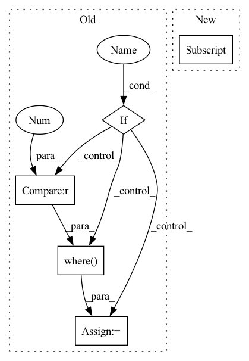

Pattern ID :39418
Before Change
tokenizer = kwargs["tokenizer"]
training_args = kwargs["training_args"]
decoded_preds = tokenizer.batch_decode(logits, skip_special_tokens=True)
if training_args.ignore_pad_token_for_loss :
// Replace -100 in the labels as we can"t decode them.
labels = np.where(labels != -100 , labels, tokenizer.pad_token_id)
decoded_labels = tokenizer.batch_decode(labels, skip_special_tokens=True)
// Some simple post-processing
decoded_preds = postprocess_text(decoded_preds)After Change
training_args.true_types,
training_args.pred_types)
pos_labels = list(training_args.id2role.values())
pos_labels.remove(training_args.id2role[0] )
micro_f1 = f1_score(final_labels, final_preds, labels=pos_labels, average="micro") * 100.0
return {"micro_f1": micro_f1}
In pattern: SUPERPATTERN
Frequency: 4
Non-data size: 5
Instances Fragment ID: 111895786
Project Name: thu-keg/omnievent
Commit Name: 16615dd3b3b08bc6a7d3a7e658469e9c3ef58003
Time: 2022-06-06
Author: penghao20170136@163.com
File Name: src/OpenEE/evaluation/metric.py
M Class Name: AnonimousClass
N Class Name: AnonimousClass
M Method Name: compute_seq_F1(2)
N Method Name: compute_seq_F1(2)
M Parent Class:
N Parent Class:
M File Name: src/OpenEE/evaluation/metric.py
N File Name: src/OpenEE/evaluation/metric.py
M Start Line: 25
M End Line: 55
N Start Line: 26
N End Line: 47
Before Change
sin_theta = torch.sqrt(1.0 - torch.pow(target_logit, 2))
cos_theta_m = target_logit * self.cos_m - sin_theta * self.sin_m //cos(target+margin)
if self.easy_margin :
final_target_logit = torch.where(target_logit > 0 , cos_theta_m, target_loit)
else:
final_target_logit = torch.where(target_logit > self.th, cos_theta_m, target_logit - self.mm)
cos_theta.scatter_(1, label.view(-1, 1).long(), final_target_logit)After Change
sin_theta = torch.sqrt(1.0 - torch.pow(target_logit, 2))
cos_theta_m = target_logit * self.cos_m - sin_theta * self.sin_m //cos(target+margin)
if cfg["USE_APEX"] == True and cfg["OPT_LEVEL"] == "O1":
target_logit = target_logit.float()
final_target_logit = torch.where(target_logit > self.th, cos_theta_m, target_logit - self.mm)
if cfg["USE_APEX"] == True and cfg["OPT_LEVEL"] == "O1": Fragment ID: 111895784
Project Name: cavalleria/cavaface.pytorch
Commit Name: f640966a75dca09b6a97bc51fc5863ebe30f8384
Time: 2020-12-08
Author: 605370459@qq.com
File Name: head/metrics.py
M Class Name: ArcFace
N Class Name: ArcFace
M Method Name: forward(3)
N Method Name: forward(3)
M Parent Class: nn.Module
N Parent Class: nn.Module
M File Name: head/metrics.py
N File Name: head/metrics.py
M Start Line: 80
M End Line: 95
N Start Line: 79
N End Line: 94
Before Change
cur_schema = cur_schema.cuda()
cross_mask[cand_idx] = cur_schema
if use_weight:
weight = torch.where(weight > 0 , 1.0, 0.0)
else:
weight = None
if use_vfl:After Change
if valid_label_mask is not None:
neg_mask = targets.sum(axis=1) == 0 if use_vfl else targets == num_classes
neg_idx = neg_mask.nonzero(as_tuple=True)[0]
cross_mask[neg_idx] = valid_label_mask[neg_idx].type(torch.int8)
if use_vfl:
loss = varifocal_loss(inputs, targets, Fragment ID: 111895779
Project Name: openvinotoolkit/model_preparation_algorithm
Commit Name: 422e1c4fb8c3e8efc7f584902a0cdbbb895387cd
Time: 2022-06-15
Author: harim.kang@intel.com
File Name: mpa/modules/models/losses/cross_focal_loss.py
M Class Name: AnonimousClass
N Class Name: AnonimousClass
M Method Name: cross_sigmoid_focal_loss(10)
N Method Name: cross_sigmoid_focal_loss(10)
M Parent Class:
N Parent Class:
M File Name: mpa/modules/models/losses/cross_focal_loss.py
N File Name: mpa/modules/models/losses/cross_focal_loss.py
M Start Line: 38
M End Line: 64
N Start Line: 33
N End Line: 39